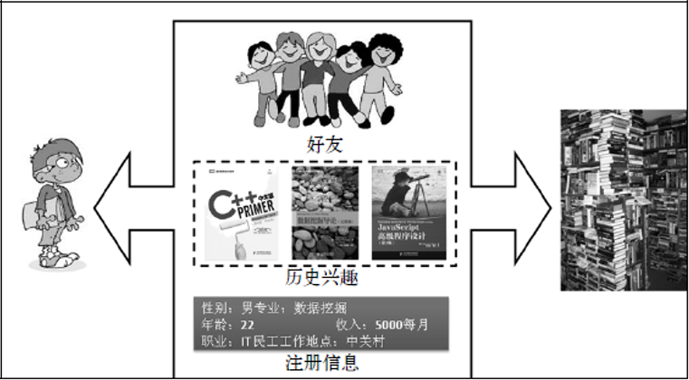
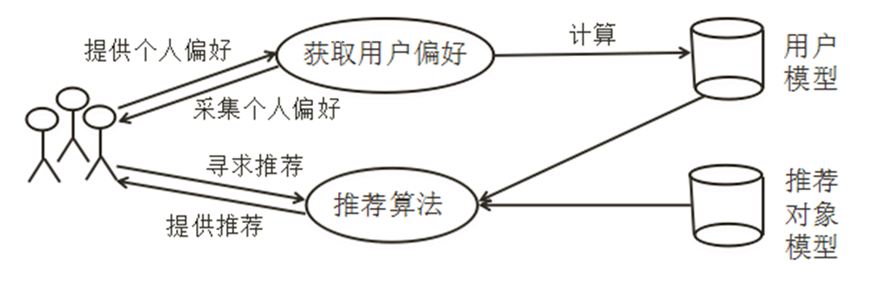
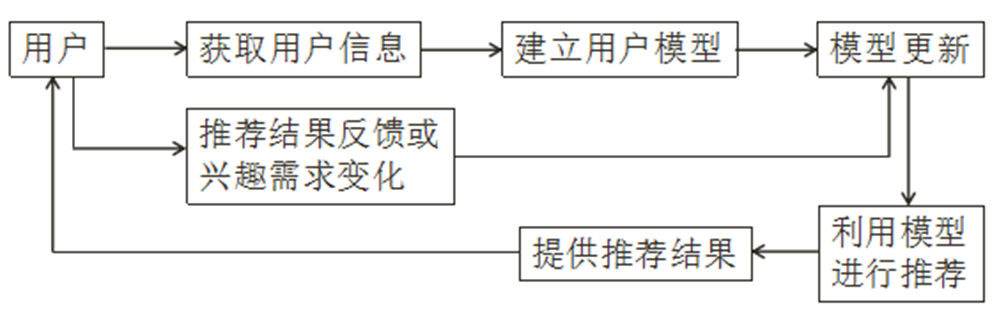
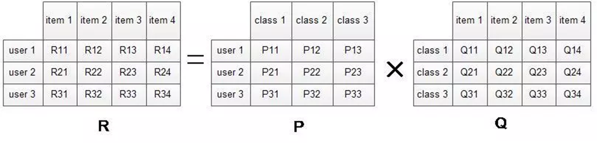
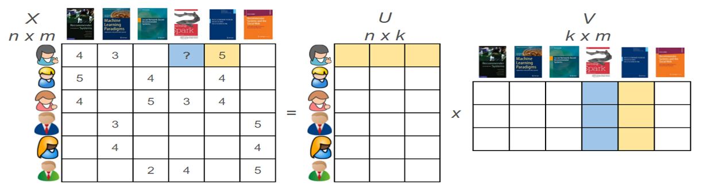
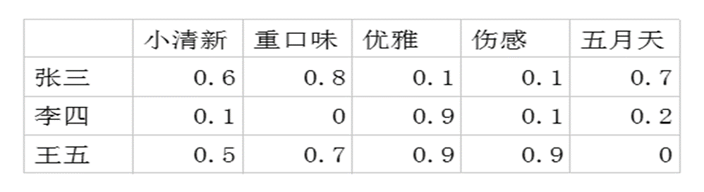
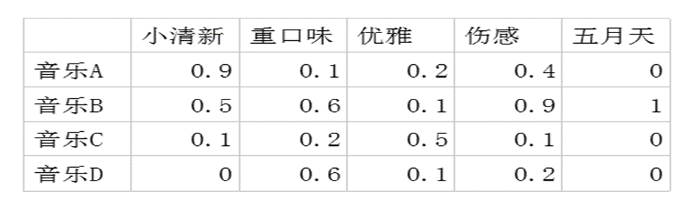
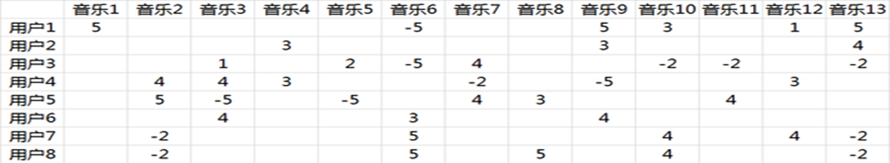
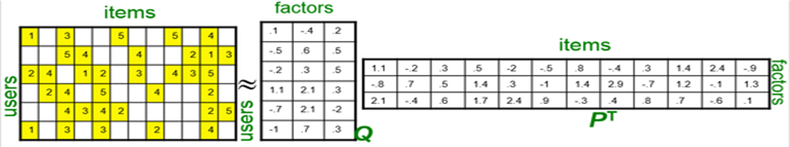
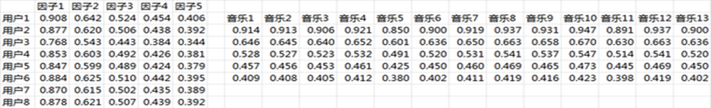

推荐系统
推荐系统概论
推荐系统的基本概念
推荐系统诞生背景
背景：互联网技术迅猛发展→信息爆炸→信息过载（信息利用率降低）。
如果处理不好这些数据，人们可能会被“反噬”，找到需要的信息会更加困难，迷失于大数据之中。有用的信息淹没于繁杂数据中的现象被称为“信息过载”。随着时代的发展，用户获取知识的方式也有所改变：利用推荐系统向用户提供个性化推荐服务。
推荐系统的非形式化概念
它是利用电子商务网站向客户提供商品信息和建议，帮助用户决定应该购买什么产品，模拟销售人员帮助客户完成购买过程。
在如今互联网信息过载的情况下，无明确需求的信息消费者想方便地找到感兴趣的内容，信息生产者则想将自己的内容推送给最合适的目标用户。推荐系统正充当了这两者的中介，解决这两个难题。
推荐系统的任务
联系用户和物品，解决信息过载的问题：
- 帮助用户发现对自己有价值的信息
- 让信息能够展现在对他感兴趣的用户面前
推荐系统算法的本质
- 通过一定的方式将用户和物品联系起来，而不同的推荐系统利用了不同的方式。
- 下图展示了联系用户和物品的常用方式，比如利用好友（社会化推荐）、用户的历史兴趣记录（协同过滤推荐）以及用户的注册信息（基于人口统计学信息的推荐）等。

推荐系统的应用
近几年，随着互联网的爆发式发展，推荐系统在互联网中的优势地位也越来越明显，在不同领域的应用越来越广泛：
- 电子商务：亚马逊的个性化推荐列表
- 电影和视频网站：Netflix的电影推荐
- 个性化音乐网络电台：网易云音乐的每日歌单
- 社交网络：QQ的好友推荐
- 个性化广告：百度搜索的广告投放
- 基于位置的服务：饿了么的推荐商家
- 生活：电子科技大学使用推荐算法分宿舍
推荐系统受欢迎的原因
从用户角度：在互联网信息大爆炸的时代，每天有听不完看不完的讯息，每个人关注的内容都不一样。有了推荐系统，用户拓宽了获取知识的方式，可以帮助用户 发现喜欢的新事物，增强了用户体验。
从商家角度: 通过推荐系统可以提供个性化服务，提高用户信任度和粘性，还可以 增加营收。比如亚马逊每年35%的销售额都来源于它的推荐。
其它信息过滤技术
门户网站、推荐系统、专业数据索引
这些技术本质上都是帮助用户过滤信息的手段，但是这些技术只满足主流需求，没有个性化的考虑。从某种意义上说，推荐系统和搜索引擎对于用户来说是两种互补的工具。搜索引擎满足了用户有明确目的时的主动查找需求，推荐系统能够在用户没有明确目的时帮助他们发现感兴趣的新内容。推荐系统和搜索引擎的区别
| 搜索引擎 | 推荐系统 |
|---|---|
| 由用户主导，包括输入查询词和选择结果，结果不好用户会修改查询再次搜索。 | 由系统主导，系统引导用户发现需要的信息。高质量的推荐系统会使用户对该系统产生依赖。 |
| 需要用户提供明确的需求，注重结果之间的排序。 | 不需要用户提供明确的需求，通过分析用户的历史行为对用户的兴趣建模，从而主动给用户推荐可能满足他们兴趣和需求的信息。 |
小结
请你思考以下问题：
- 为什么会出现推荐系统？
- 举例说明你所正在使用的推荐系统案例。
- 推荐系统的和搜索引擎最显著的区别是什么？
推荐系统评测方法
计算和获得评测指标的主要实验方法：
- 离线实验
- 用户调查
- 在线实验
离线实验
离线实验的一般步骤：
- 通过日志系统获得用户行为数据，并按照一定格式生成一个标准的数据集；
- 将数据集按照一定的规则分成训练集和测试集；
- 在训练集上训练用户兴趣模型，在测试集上进行预测；
- 通过事先定义的离线指标评测算法在测试集上的预测结果。
离线实验的优点：
- 实验都是在数据集上完成的，不需要一个实际的系统来供它实验
- 不需要用户参与实验，成本低
- 速度快，可以测试大量算法
离线实验的缺点：
- 无法计算商业上关心的指标，如点击率、转化率等
- 离线实验的指标和商业指标存在差距
用户调查
用户调查需要一些真实的用户，让他们在需要测试的推荐系统上完成一些任务。在他们完成任务时，需要观察和记录用户的行为，并让他们回答一些问题。最后，我们通过分析他们的行为和答案，了解测试系统的性能。
用户调查的优点：
- 可以获得用户主观感受的指标，出错后容易弥补。
用户调查的缺点：
- 招募测试用户代价较大；
- 无法组织大规模的测试用户，统计意义不足；
在线实验
在完成离线实验和用户调查之后，可以将系统上线做AB测试，将它和旧算法进行比较。
AB测试通过一定的规则将用户随机分成几组，对不同组的用户采用不同的算法，然后通过统计不同组的评测指标，比较不同算法的好坏。
AB测试的核心思想：
- 多个方案并行测试；
- 每个方案采用不同的推荐算法；
- 以某种规则优胜劣汰。
AB测试的优点：
- 可以公平获得不同算法实际在线时的性能指标，包括商业上关注的指标；
AB测试的缺点：
- 周期较长，必须进行长期的实验才能得到可靠的结果，设计也比较复杂；
实验方法总结
一般来说，一个新的推荐算法最终上线，需要完成上述的三个实验。
- 首先，通过离线实验证明它在很多离线指标上优于现有的算法；
- 其次，通过用户调查确定用户满意度不低于现有的算法；
- 最后，通过在线AB测试确定它在我们关心的指标上优于现有的算法；
推荐系统评测指标
用户满意度、预测准确度、覆盖率、多样性、新颖性、惊喜度、信任度、实时性、健壮性
、商业目标。
用户满意度
描述用户对推荐结果对的满意程度，这是推荐系统最重要的指标，通过对用户进行问卷调查或监测用户线上行为数据获得。
**问卷调查实例：**GroupLens曾经做过一个论文推荐系统的调查问卷，请问下面那句话最能描述你看到推荐结果的感受：
Ø推荐的论文都是我想看的
Ø推荐的论文很多我都看过，确实是符合我兴趣的不错论文
Ø推荐的论文和我的研究兴趣相关，但我不喜欢
Ø推荐的论文和我的研究兴趣不相关，不知道为什么会推荐这些论文
监测用户线上行为数据的常见统计方式：
Ø电子商务网站中，用户如果购买了推荐的商品，就表示他们在一定程度上满意，可以利用购买率度量用户的满意度
Ø有些网站会通过设计一些用户反馈界面收集用户满意度，设计满意/不满意的反馈按钮，统计两种按钮的点击情况。
Ø更一般的情况，我们可以用点击率和用户停留时间等度量用户的满意度
预测准确度
描述推荐系统预测用户行为的能力。一般通过离线数据集上算法给出的推荐列表和用户行为的重合率来计算。
计算公式：
其中，R(u)表示系统为用户u推荐的物品集合，T(u)表示用户u在测试集上喜欢的物品集合。
覆盖率
描述推荐系统对长尾物品的发掘能力。一般通过所有推荐物品占总物品的比例来计算。比例越大，则覆盖率越大。一个好的推荐系统不仅需要有比较高的用户满意度，也要有较高的覆盖率。
长尾物品：需求不旺或销量不佳的产品。在信息不流通的年代，它们往往是被封尘的产品。
多样性
描述推荐系统中推荐结果能否覆盖用户不同的兴趣领域。一般通过推荐列表中物品两两之间的不相似性来计算，物品之间越不相似则多样性越好。
增加推荐列表的多样性，可以覆盖用户更多的兴趣点，会增加用户找到感兴趣物品的概率。
新颖性
如果用户没有听说过推荐列表中的大部分物品，则说明该推荐系统的新颖性较好。
新颖性的评测：
- 利用推荐结果的平均流行度，因为越不热门的商品越可能让用户觉得新颖。由于不同用户不知道的商品是不同的，所以这个方法比较粗糙。
- 要准确的统计新颖性需要做用户调查。
实现新颖性的最简单方法：把用户之前有过行为的物品及其相似度较高的物品从推荐列表中删除。
惊喜度
如果推荐结果和用户的历史兴趣不相似，但让用户很满意，则可以说这是一个让用户惊喜的推荐。可以定性的通过推荐结果与用户的历史兴趣和用户满意度来衡量。
与新颖性的区别： 新颖性仅仅取决于用户是否听说过这个推荐结果，而惊喜度还取决于用户满意度。
信任度
描述用户对推荐系统的信任程度。度量推荐系统的信任度只能通过问卷调查的方式，询问用户是否信任推荐系统的推荐结果。
提供信任度的方法：
- 增加推荐系统的透明度，如：提供推荐解释。
- 考虑用户的社交网络信息，利用用户的好友信息给用户做推荐，并且用好友做推荐解释。
实时性
新闻等物品具有很强的时效性，需要在物品还具有时效性时就把它们推荐给用户。时效性强的物品在进行推荐时必须考虑推荐系统处理物品冷启动的能力，可以采用人工推荐。
对于用户：推荐系统需要实时的更新推荐列表来满足用户新的行为变化。
对于物品：推荐系统需要能够将新加入系统的物品推荐给用户
健壮性
健壮性用来衡量一个推荐系统的抗击作弊能力。
任何能够带来利益的算法系统都会受到攻击，最典型的就是搜索引擎（竞排的作弊和反作弊斗争），推荐系统中也同样存在，最常见的就是行为注入攻击。健壮性的评测主要利用模拟攻击。
提供健壮性的方法：
- 设计推荐系统时尽量采用代价比较高的用户行为。
- 在使用数据前，先进行攻击检测，从而对数据进行清理。
商业目标
很多时候，评价推荐系统更加注重网站的商业目标是否达成，商业目标和网站的盈利是息息相关的。最本质的商业目标是平均一个用户给公司带来的盈利。网站使用推荐系统的目的处理满足用户发现物品的需求，也需要利用推荐系统加快实现商业上的目标。不同网站具有不同的商业目标：电子商务网站的商业目标大多为销售额。基于广告盈利的网站的商业目标大多为广告点击量。
小结
请你思考以下问题：
- 推荐系统获得评测指标的主要实验方法有哪些？
- 评测推荐系统最重要的指标是什么？该指标的常见获取方式有哪些？
推荐系统模块
推荐系统有三个重要的模块：用户模块、推荐对象模块、推荐算法模块。
推荐系统使用推荐算法对用户模型中用户的兴趣偏好信息和推荐对象模型中物品的特征信息进行匹配和计算筛选，找到用户可能感兴趣的推荐对象，然后推荐给用户。
用户模块
用户建模的对象
- 单用户建模：针对单个用户进行建模，比如基于内容的推荐。
- 群组建模：针对群体用户进行建模，比如协同推荐。
用户模块的功能
- 能获取、表示、存储和修改用户兴趣爱好，能够进行推理
- 对用户进行分类和识别
- 帮助系统更好地理解用户特征和类别，理解用户的需求和任务，从而更好地实现用户所需要的功能
用户建模前需要考虑的问题
- 模型的输入数据有哪些，如何获取模型的输入数据
- 如何考虑用户的兴趣及需求的变化
- 建模的对象是谁
- 如何建模
- 模型的输出是什么
用户建模的大致过程

存在的问题
用户的兴趣和需求会随着时间和情景发生变化，用户建模时要考虑到用户长期兴趣爱好和短期兴趣爱好，还要考虑兴趣的变化。目前很多研究关注了用户的长期兴趣，建立了静态模型，用户兴趣更新的动态模型也受到了很多关注，短期兴趣的技术还不太成熟。
推荐对象模块
推荐对象进行特征描述的方法
- **基于内容的方法：**从对象本身抽取信息来表示对象，使用最广泛的方法是用加权关键词矢量。目前使用最广泛的方法是TF-IDF方法。
- **基于分类的方法：**把推荐对象放入不同类别中，这样可以把同类文档推荐给该类文档感兴趣的用户了。文本分类的方法有多种，比如朴素贝叶斯(Naive-Bayes)、k最近邻(KNN)和支持向量机(SVM)等方法。对象的类别可以预先定义，也可以利用聚类技术自动产生。
存在的问题：
- 文本等对象特征提取技术相对比较成熟，但是网络上广泛存在的多媒体数据等的提取技术不够成熟，自动化的特征提取方法需要结合多媒体内容分析领域的相关技术。
- 推荐系统推荐给用户的对象首先不能与用户看过的对象重复，其次也不能与用户刚刚看过的太相似或是不相关，这就是所谓的模型过拟合问题。
- 推荐系统中出现新的对象时，新对象必须等待一段时间才会有用户查看并进行评价，在此之前推荐系统无法对此对象进行分析和推荐，这就是推荐系统研究的重点–冷启动问题。
推荐算法模块
推荐算法是整个推荐系统中最核心的部分，在很大程度上决定了推荐系统类型和性能的优劣。使用较广泛的两种推荐算法有基于内容的推荐和协同过滤推荐。
基于内容推荐的算法思路
- 物品特征表示：为每个物品抽取出一些特征来表示此物品。
- 用户特征学习：利用一个用户过去喜欢（及不喜欢）的物品的特征数据，来学习出此用户的喜好特征。
- 生成推荐列表：通过比较上一步得到的用户喜好特征与候选物品的特征，为此用户推荐一组相关性最大的物品。
物品特征表示
- 结构化特征：属性意义比较明确，取值限定在某个范围，一般可以直接使用，如年龄、性别等。
- 非结构化特征：属性意义不明确，取值也没有什么限制，往往要先把它转化为结构化数据后才能在模型里使用。例如，我们可以计算所有文章中出现过的单词的集合在不同文章中的权重，最后使用一个向量来表示一篇文章。
文章特征表示（TF-IDF向量化方法）
1. 基本定义
- 文档集合 (D)： $ D = {d_1, d_2, \ldots, d_N} $，其中 为文章总数。
- 词汇集合 (T)： $ T = {t_1, t_2, \ldots, t_n} $，其中 为所有文章中出现的不重复词的总数。
- 目标： 将一篇文章 表示为一个向量 。向量中的每个分量 表示词 在文章 中的权重，权重值越大，表示该词越重要。
2. 权重计算步骤
文章向量的权重通过计算词频-逆文档频率 (TF-IDF) 并归一化得到。
-
第一步：计算 TF-IDF 值
计算词 在文章 中的 TF-IDF 值。- ： 词 在文章 中出现的次数（词频）。
- ： 文档集合 中的文章总数。
- ： 所有文章中包含词 的文章数量。
- ： 逆文档频率 (IDF)。一个词出现的文章越少（ 越小），IDF值越大，说明该词越具有区分度。
-
第二步：对向量进行归一化
将计算得到的所有词的TF-IDF值进行归一化处理，得到最终的权重分量 。归一化后，向量 变为单位长度，此举通常是为了消除不同文章长度带来的影响，使向量表示更加稳健，便于后续的相似度比较（如余弦相似度）。
小结
请你思考以下问题：
- 推荐系统中有哪些重要的模块？它们分别有什么功能？
- 简述基于内容的推荐系统的算法思路。
协同过滤推荐
协同过滤推荐算法是诞生最早，使用最广泛的推荐算法，算法通过对用户历史行为数据的挖掘发现用户的偏好基于不同的偏好对用户进行群组划分并推荐品味相似的商品。
协同过滤推荐算法可以大致分为两类：基于邻域的方法和基于模型的方法(即隐语义模型)。在业界得到最广泛应用的是基于邻域的方法，主要包括下面两种算法：
- 基于用户的协同过滤算法: “人以群分”
- 基于物品的协同过滤算法：“物以类聚”
用户行为数据简介
用户行为数据主要包括物品浏览、购买、点击、评分和评论等。网站在运行过程中会产生大量的原始日志，推荐系统会汇总原始日志生成描述用户行为的会话日志，这些日志记录了用户的各种行为。用户行为在个性化推荐系统中一般分两种：显性反馈行为：用户明确表示对物品喜好的行为，如评分等。隐性反馈行为：不能明确反映用户喜好的行为，如浏览记录等。
| 显性反馈数据 | 隐性反馈数据 | |
|---|---|---|
| 用户兴趣 | 明确 | 不明确 |
| 数量 | 较少 | 庞大 |
| 存储 | 数据库 | 分布式文件系统 |
| 实时读取 | 实时 | 有延迟 |
| 正负反馈 | 都有 | 只有正反馈（喜欢该物品） |
基于用户的协同过滤推荐
算法思路：
- 找到和目标用户兴趣相似的用户集合。
- 找到这个集合中的用户喜欢的，且目标用户没有听说过的物品推荐给目标用户。
特点：
- 更社会化，着重于反映和用户兴趣相似的小群体的热点。
实例 每年新学期开始，刚进实验室的师弟总会问师兄相似的问题，比如“我应该买什么专业书啊”、 “我应该看什么论文啊”等。这个时候，师兄一般会给他们做出一些推荐。这就是现实中个性化推荐的一种例子。师弟之所以请教师兄，一方面是因为他们有社会关系，互相认识且信任对方，但更主要的原因是师兄和师弟有共同的研究领域和兴趣。那么，在一个在线个性化推荐系统中，当一个用户A需要个性化推荐时，可以先找到和他有相似兴趣的其他用户，然后把那些用户喜欢的、而用户A没有听说过的物品推荐给A。
相似度计算方法
相似度计算方法：
余弦相似度
其中，表示用户对所有物品的评价向量；表示用户对所有物品的评价向量。
已根据您提供的图片内容，对“用户相似度计算方法”中的皮尔逊相关系数进行了清晰的格式整理。
皮尔逊相关系数
1. 计算公式
皮尔逊相关系数用于衡量两个用户之间的评分相似度，其值域为 [-1, 1]。计算公式如下：
2. 符号说明
- ：用户 评价过的物品集合
- ：用户 评价过的物品集合
- ：用户 对物品 的评分
- ：用户 对物品 的评分
- ：用户 对所有物品评分的平均值
- ：用户 对所有物品评分的平均值
3. 计算要点
- 交集计算：只考虑用户 和用户 共同评价过的物品集合
- 中心化处理：计算时使用评分与各自平均值的偏差（），消除了用户评分尺度差异的影响
- 归一化处理：分母对协方差进行标准化，使得相似度值在 [-1, 1] 范围内
4. 物理意义
- ：完全正相关，评分变化趋势完全一致
- ：完全负相关，评分变化趋势完全相反
- ：无线性相关关系
- 值越接近1，表示两个用户的评分偏好越相似
计算用户u对物品i的预测分值
1. 核心思想
基于用户的协同过滤方法通过寻找目标用户u的“邻居”（即相似用户），利用这些邻居对物品i的评分，来预测用户u对物品i的可能评分。
2. 计算前提与定义
- 邻居集 (N)： 首先根据相似度计算，得到与用户u最相似的若干用户，构成其邻居集。在该邻居集中，进一步筛选出对目标物品i有过评分记录的用户子集，记为N。
- 核心逻辑： 预测分值基于用户u自身的平均评分，并参考其相似邻居们对该物品的“偏好偏差”进行加权调整。
3. 预测公式
4. 符号说明
| 符号 | 含义 |
|---|---|
| 预测值：用户u对物品i的预测评分 | |
| 基准值：用户u对所有物品评分的平均值 | |
| 有效邻居集：用户u的邻居中，确实对物品i评过分的用户集合 | |
| 有效邻居集N中的某一个用户 | |
| 权重：用户u与邻居用户之间的相似度 | |
| 实际评分：邻居用户对物品i的实际评分 | |
| 邻居基准：邻居用户对所有物品评分的平均值 | |
| 偏好偏差：邻居用户对物品i的评分相对于其平均评分的偏差 |
5. 公式解读
该公式可分为两部分理解：
- 基准部分 ()：以用户u自身的平均评分作为预测的基准。
- 调整部分 (分式部分)：
- 分子：计算所有有效邻居的“偏好偏差”的相似度加权和。相似度越高(越大)的邻居，其偏好偏差对预测结果的影响越大。
- 分母：使用所有有效邻居相似度的绝对值之和进行归一化，确保调整量在一个合理的范围内。
生成推荐列表
对用户u所有之前未产生过行为的物品i进行评分预测，然后根据预测的评分对这些物品进行降序排序，筛选评分较高的M个物品生成推荐列表展示给用户。
基于物品的协调过滤推荐
算法思路：
- 计算物品间的相似度。
- 根据物品的相似度和用户的历史行为生成推荐列表。
特点：
- 更个性化，着重于维护用户的历史兴趣，反映了用户兴趣的历史传承。
物品相似度计算
其中，是喜欢物品i的用户数，是同时喜欢物品i和物品j的用户数。从上面的定义看出，在协同过滤中两个物品产生相似度是因为它们共同被很多用户喜欢，两个物品相似度越高，说明这两个物品共同被很多人喜欢。
上一个公式虽然看起来很有道理，但是却存在一个问题。如果物品很热门，很多人都喜欢，那么和物品相似度会很高。因此，该公式会造成任何物品都会和热门的物品有很大的相似度，这对于致力于挖掘长尾信息的推荐系统来说显然不是一个好的特性。为了惩罚推荐出热门的物品，可以用上面的公式。
其中，是喜欢物品i的用户数，是喜欢物品j的用户数，是同时喜欢物品i和物品j的用户数。
计算用户u对i的预测分数
生成推荐列表
对用户u所有之前未产生过行为的物品i进行评分预测，然后根据预测的评分对这些物品进行降序排序，筛选评分较高的M个物品生成推荐列表展示给用户。
例题
用户A、B、C、D、E对物品1、2、3、4的评分记录如下表，请预测用户C对物品1的评分（分数高于平均值视为喜欢）。
| 评分项 | 用户A | 用户B | 用户C | 用户D | 用户E |
|---|---|---|---|---|---|
| 物品1 | 5 | 3 | - | 2 | 3 |
| 物品2 | - | 4 | 4 | 1 | 3 |
| 物品3 | 4 | - | 5 | - | - |
| 物品4 | 2 | 4 | 1 | 4 |
隐语义模型
核心思想：
隐语义模型依据“兴趣”等隐含特征将用户与物品进行连接。
实例：
假设用户A喜欢《数据挖掘导论》（属于计算机类的书籍），那我们可以将《推荐系统》等计算机类书籍推荐给用户A；用户B喜欢《三个火枪手》（属于文学类书籍），可将《巴黎圣母院》等这类文学作品推荐给用户B。
数学理解：
如下图所示，R矩阵是用户对物品的偏好信息，P矩阵是用户对各物品类别的一个偏好信息，Q矩阵是各物品所归属的的物品类别的信息。隐语义模型就是要将矩阵R分解为矩阵P和矩阵Q的乘积，即通过矩阵中的物品类别将用户和物品联系起来。

基于低秩矩阵分解的方法：
- 从评分矩阵中抽取一组潜在的（隐藏的）因子，并通过这些因子向量描述用户和物品。
- SVD将评价矩阵分解为3个低秩的矩阵，这3个矩阵的乘积能对原始矩阵进行某种程度的复原，从而可以评估出缺失值。
- 在电影领域，这些自动识别的因子可能对应一部电影的常见标签，比如风格或者类型（戏剧片或者动作片），也可能是无法解释的。
矩阵因子分解（如奇异值分解）将项和用户都转化成了相同的潜在空间，即将用户偏好矩阵分解成一个用户-潜在因子矩阵乘以一个潜在因子-项矩阵，代表用户和项之间的潜相互作用。
矩阵分解背后的原理是潜在特征代表了用户如何给项进行评分。给定用户和项的潜在描述，我们可以预测用户将会给还未评价的项多少评分。

用户-潜在因子矩阵Q：表示不同的用户对于不用元素的偏好程度，1代表很喜欢，0代表不喜欢。如：

潜在因子-音乐矩阵P：表示每种音乐含有各种元素的成分。如下表中，音乐A是一个偏小清新的音乐，含有小清新这个Latent Factor的成分是0.9，重口味的成分是0.1，优雅的成分是0.2……

利用这两个矩阵，我们能得出张三对音乐A的喜欢程度是：
即：
问题：潜在因子（latent factor）是怎么得到的呢？
由于面对海量的音乐，让用户自己给音乐分类并给出自己的偏好系数显然是不现实的，事实上我们能获得的数据只有用户行为数据。如：单曲循环=5, 分享=4, 收藏=3, 主动播放=2 , 听完=1, 跳过=-2 , 拉黑=-5，在分析时能获得的实际评分矩阵R，也就是输入矩阵大概如下：

事实上这是个非常非常稀疏的矩阵，因为大部分用户只听过全部音乐中很少一部分。如何利用这个矩阵去找潜在因子？这里主要应用到的是矩阵的奇异值分解。即将上面的评分矩阵分解为两个低维度的矩阵，用Q和P两个矩阵的乘积去估计实际的评分矩阵，而且我们希望估计的评分矩阵和实际的评分矩阵不要相差太多。

这里涉及到最优化理论，在实际应用中，往往还要在后面加上2范数的罚项，然后利用梯度下降法就可以求得P,Q两个矩阵的估计值。
例如上面给出的那个例子可以分解成为这样两个矩阵：

矩阵P、Q中参数值的计算：
| 项目 | 描述 |
|---|---|
| 核心思想 | 将用户-物品评分矩阵分解为两个低维矩阵的乘积：用户特征矩阵P和物品特征矩阵Q |
| 数学表达 | ，其中R为原始评分矩阵，P为用户潜在特征矩阵，Q为物品潜在特征矩阵 |
| 推荐步骤 | 1. 矩阵分解得到P和Q<br>2. 计算预测评分矩阵<br>3. 剔除用户已听过的音乐，选择预测分数最高的音乐推荐 |
损失函数公式
损失函数的意义是用户U对物品I的真实喜爱程度与推算喜爱程度的均方根误差，要使模型最合理就要使这个误差达到最小值。
公式组成部分
| 部分 | 含义 | 作用 |
|---|---|---|
| 拟合误差项 | 衡量真实评分与预测评分的差异 | |
| 正则化项 | 防止过拟合，提高模型泛化能力 |
优化过程
| 步骤 | 数学表达 | 说明 |
|---|---|---|
| 求偏导 | 对用户特征向量的梯度 | |
| 对物品特征向量的梯度 | ||
| 参数更新 | 随机梯度下降更新用户特征 | |
| 随机梯度下降更新物品特征 |
缺陷：
很难实现实时推荐，隐语义模型的训练需要在用户行为记录上反复迭代才能获得比较好的性能，因此模型的每次训练都很耗时，一般在实际应用中只能每天训练一次，并且计算出所有用户的推荐结果。
小结
请你思考以下问题：
- 简述基于用户的协同过滤推荐和基于物品的协调过滤推荐的原理。
- 用户A、B、C、D、E对商品1、2、3、4的评分记录如下表，请分别使用基于用户的协同过滤推荐和基于物品的协同过滤推荐预测用户D对物品3的评分。
冷启动
问题定义
使用协同过滤推荐算法时，新用户或新物品刚加入系统时、系统刚上线时，会因为行为数据的匮乏导致冷启动问题。如何在没有大量用户数据的情况下设计个性化推荐系统并且让用户对推荐结果满意，就是冷启动要解决的问题。
问题分类
冷启动问题分类：
- 用户冷启动：主要解决如何给新用户做个性化推荐
- 物品冷启动：主要解决如何将新的物品推荐给可能对它感兴趣的人
- 系统冷启动：主要解决如何在刚上线的系统上设计个性化推荐系统
用户冷启动
利用用户注册信息
在网站中，当新用户刚注册时，我们不知道他喜欢什么物品，于是只能提供非个性化的推荐，给他推荐一些热门的商品。但如果我们知道他是一位男性、今年28岁，那么就可以给他推荐这个年龄段的男性都喜欢的热门商品。虽然这种个性化的粒度很粗，但相对于非个性化推荐，这种推荐的精度已经大大提高了
用户注册信息分类
- 人口统计学信息：包括用户的年龄、性别、职业、民族、居住地等
- 用户兴趣的描述：许多网站会在用户注册时让用户勾选部分感兴趣的标签
- 从其他网站导入的用户站外行为数据：如果用户使用新浪微博、微信、QQ的账户登录，也可以在得到用户的许可下获取一些用户在新浪微博、微信、QQ的行为数据和社交网络数据。
基于用户注册信息的个性化推荐流程
- 获取用户的注册信息
- 根据用户注册信息对用户进行分类
- 给用户推荐他所属分类中用户喜欢的物品
实例：
- 从用户注册信息数据库中查询该用户的注册信息(性别：男、年龄：28岁、职业：物理学家)
- 查询计算好的离线相关表，可以得到：男性最喜欢的电视剧、28岁用户最喜欢的电视剧、物理学家最喜欢的电视剧
- 将查询出的电视剧列表按照一定权重相加，得到呈现给用户的最终推荐列表
选择合适物品启动用户兴趣
新用户第一次访问推荐系统时，不立即给用户展示推荐结果，而是给用户推荐一些物品，让用户反馈他们对这些物品的兴趣，然后根据用户反馈为用户提供个性化推荐。
选择物品的特点：
- 热门：要让用户对一个物品进行反馈的前提是用户知道这个物品是什么东西。
- 区分度强：启动用户兴趣的物品不能是老少皆宜的，这样的物品对用户的兴趣没有区分性。
- 多样性好：用户兴趣的可能性很多，我们需要提供具有很高覆盖率的启动物品集合，这些物品能覆盖大部分主流的用户兴趣。
物品冷启动
物品冷启动在新闻网站等时效性很强的网站中非常重要，因为那些网站中时时刻刻都有新加入的物品，而且每个物品必须能够在第一时间展现给用户，否则经过一段时间后，物品的价值就大大降低了。
基于用户的协同过滤算法的解决方法
- 将新的物品随机展示给用户
- 利用物品的内容信息，将新物品先投放给曾经喜欢过和它内容相似的其他物品的用户
- 激励或者雇佣少量用户对每一个新物品进行评分。
物品内容信息的表示
一般来说，物品的内容可以通过向量空间模型表示，该模型会把物品表示成一个关键词的向量。如果内容是文本的形式，则需要引入一些理解自然语言的技术抽取关键词，并计算每个关键词的权重，从而生成关键词向量。如果内容是电影，可以根据演员在剧中的重要程度赋予他们权重。
向量空间模型的优点是简单，缺点是丢失了一些信息，比如关键词之间的关系信息。不过在绝大多数应用中，向量空间模型对于文本的分类、聚类、相似度计算已经可以给出令人满意的结果。
系统冷启动
很多系统在建立的时候，既没有用户的行为数据，也没有充足的物品内容信息来计算物品相似度。这种情况下，很多系统都利用专家进行标注。
以Pandora电台为例，Pandora雇用了一批音乐人对几万名歌手的歌曲进行各个维度的标注，最终选定了400多个特征。每首歌都可以标识为一个400维的向量，然后通过常见的向量相似度算法计算出歌曲的相似度。
小结
请你思考以下问题：
- 用户冷启动问题有哪些解决方案？
- 基于用户的协同过滤可以如何处理物品冷启动问题？
个性化推荐的挑战
数据稀疏问题
现在待处理的推荐系统规模越来越大，用户和商品数目动辄上亿，两个用户之间选择的重叠非常少，淘宝网的数据稀疏度在百万分之一以下。数据非常稀疏导致绝大部分基于关联分析的算法（譬如协同过滤）效果都不好。这个问题本质上是无法完全克服的。
可将用户的年龄、国籍、性别等个人信息增加作为用户相似度计算的根据，称为基于人口统计学的过滤方法。
多样性与精确性的两难困境
如果要给用户推荐他喜欢的商品，最“保险”的方式就是给他特别流行的商品，因为这些商品有更大的可能性被喜欢。盲目崇拜精确性指标可能会导致用户的视野变得越来越狭窄，难以激发用户新的购物需求。推荐多样的商品与推荐的精确性之间存在矛盾，因为前者风险很大。
一种可行之策是直接对推荐列表进行处理，从而提升其多样性。
推荐系统的鲁棒性问题
受推荐系统在电子商务领域重大的经济利益的驱动，一些心怀不轨的用户通过提供一些虚假恶意的行为，故意增加或者压制某些商品被推荐的可能性。
有一些技术已经被设计出来提高推荐系统面对恶意攻击的鲁棒性，譬如通过分析对比真实用户和疑似恶意用户之间打分行为模式的差异，提前对恶意行为进行判断，从而阻止其进入系统或赋予疑似恶意用户比较低的影响力。
结束语
推荐系统作为信息时代的关键技术，已从早期的协同过滤演进至融合深度学习、多模态数据的智能体系，有效连接用户与信息，缓解信息过载问题。未来，随着强化学习、因果推理等技术的发展，推荐系统将更加注重多样性、可解释性与伦理公平性，致力于在准确预测用户兴趣的同时拓展其视野，最终成为理解需求、创造价值的智能信息伴侣。